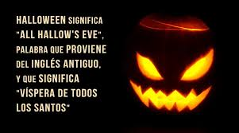

Antes de comenzar a maquillar, aplicad una capa de crema hidratante en la cara.
A la hora de maquillarse hay que tener especial cuidado.
Es mejor no utilizar prótesis o piezas que puedan pegarse en la piel como verrugas o pestañas postizas.
Y las monstruosas ideas que puedes poner en práctica, no queda más que ponerse manos a la obra.
Algunas cosas que a lo mejor no sabes de esta fiesta...
Los antguos celtas creían que con la llegada de Samhain la línea que une a este mundo con el de los muertos se estrechaba y los espíritus buenos y malos podían pasar a través de ella. Se cree que el uso de las máscaras era para ahuyentar a los espíritus malignos. También se celebraban banquetes en las tumbas de los antepasados familiares.
Los ritos sagrados celebrados tenían en sus orígenes un carácter purificador y religioso entre los que estaba la comunicación con los muertos, a los que se les ayudaba a encontrar su camino colocando velas encendidas en las ventanas.
Cuando llegó la ocupación romana a Ɵerras celtas la fesƟvidad se mezcló con las propias de los invasores como la “fiesta de la cosecha”, celebrada en honor a la diosa Pomona.
Volver al inicio